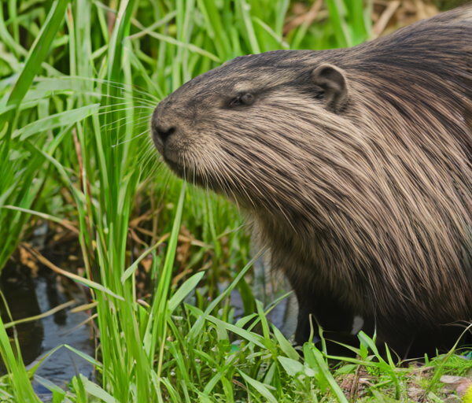

Estos son algunos de los habitantes de parque:
Nutria
La nutria europea o paleártica (Lutra lutra) es un mamífero carnívoro de hábitat acuático. Se alimenta de peces, ranas y pequeñas presas que caza en el río. Cerca de sus lugares de cobijo, podemos ver toboganes que crean para llegar rápidamente al agua.
Buitre leonado
El buitre leonado (Gyps fulvus) es un ave rapaz, una de las mayores que puede encontrarse en la Península Ibérica. Su alimentación principal es la carroña, que localiza con su aguda vista.
Gineta
La gineta (Genetta genetta) es una especie de mamífero carnívoro. Son grandes trepadoras, muy ágiles y grandes cazadoras de pequeños animales. Aunque también se alimentan de los frutos del bosque que se pueden encontrar en el parque.
